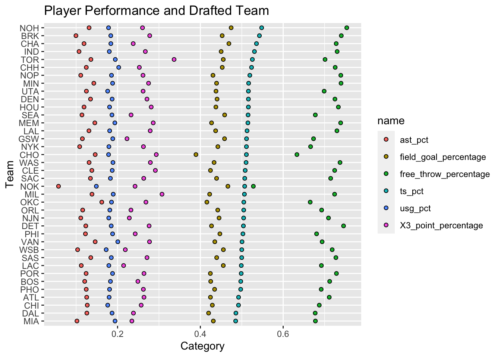
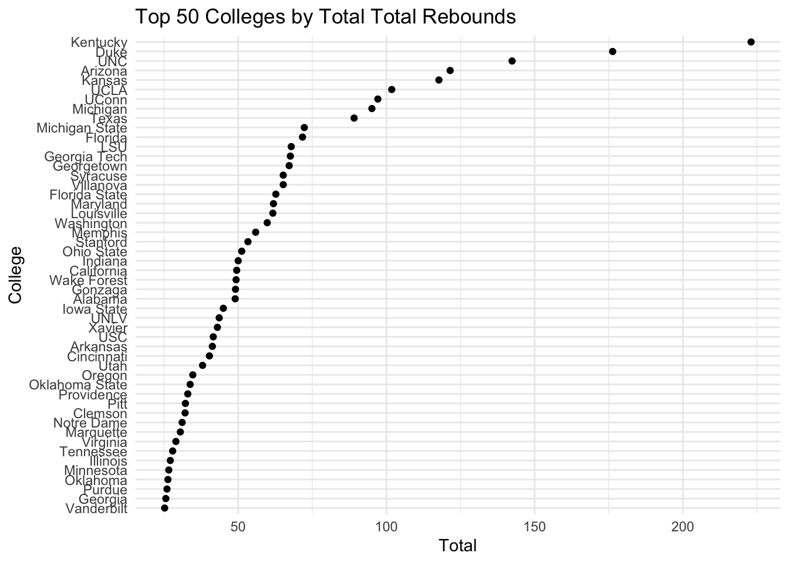
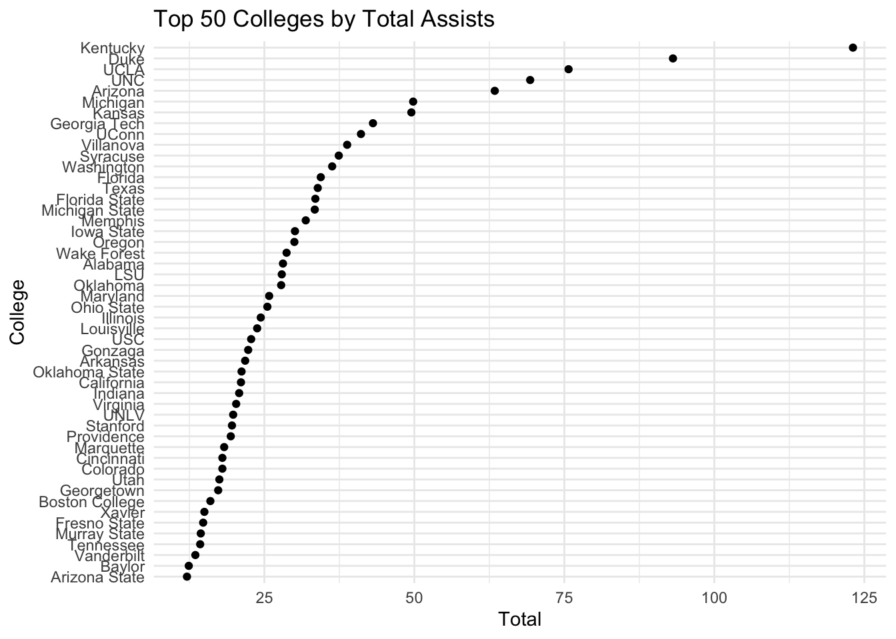
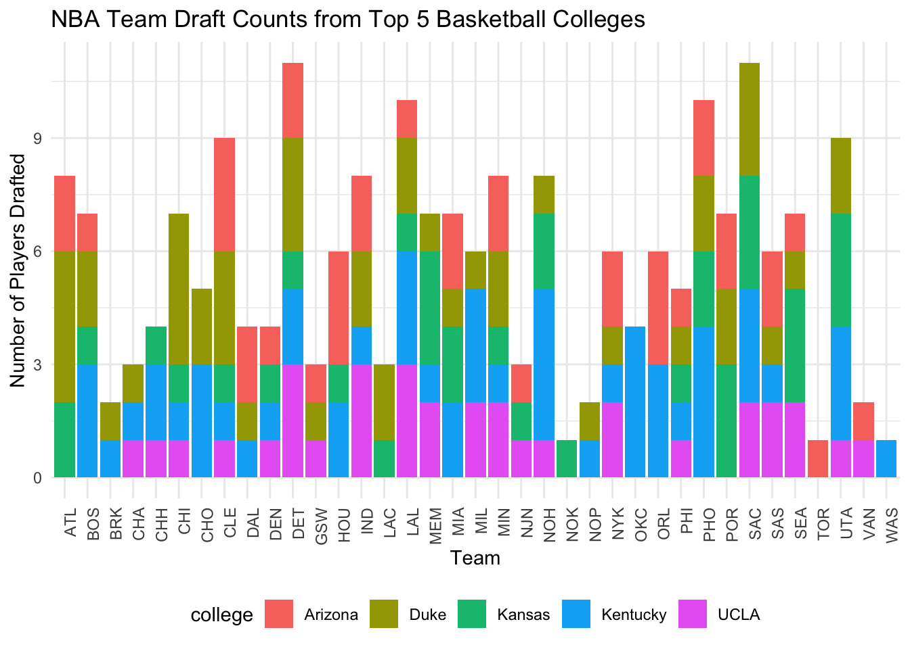
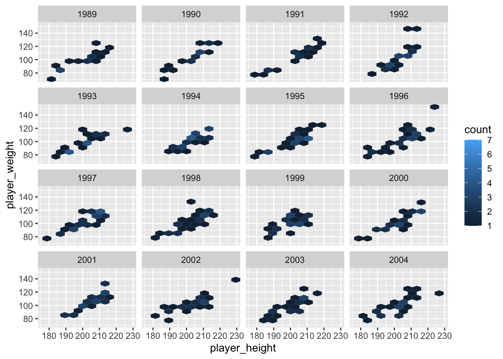
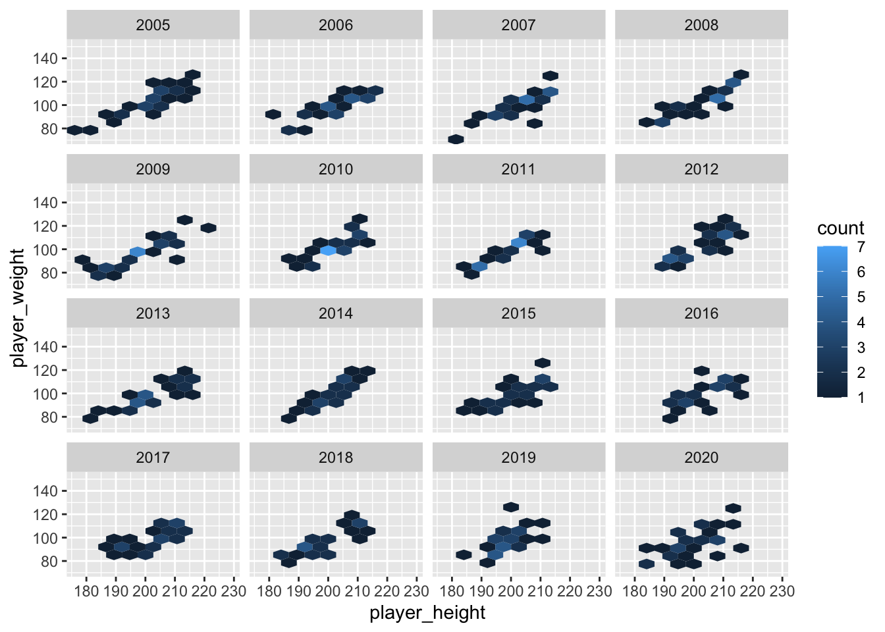
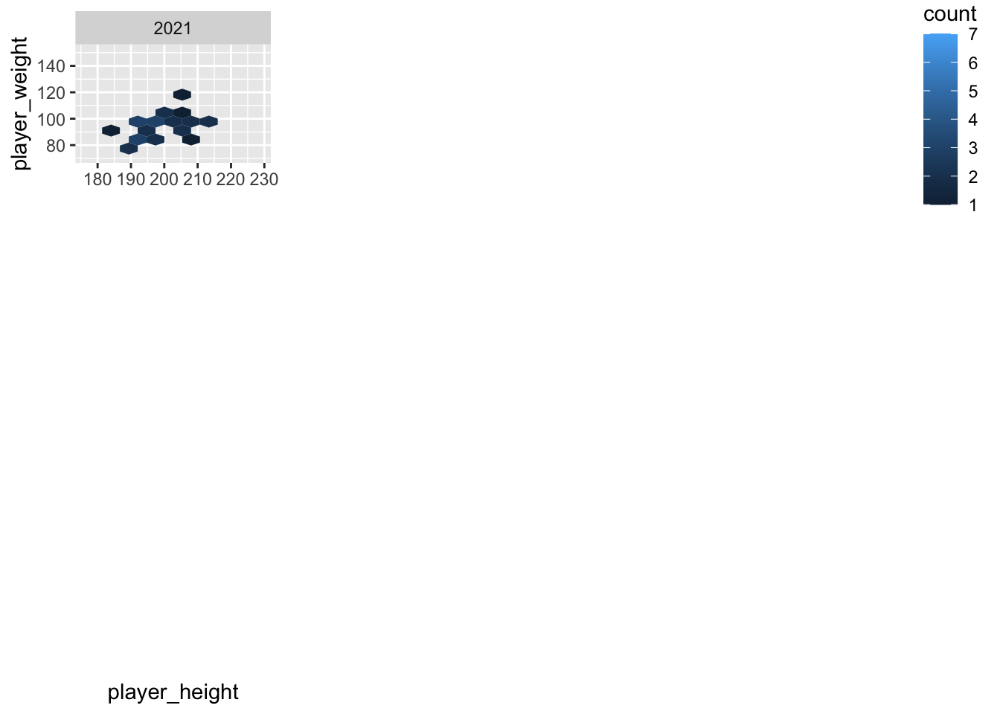

The pick number(ranking of draft player) can relatively reflect the players’ ability, especially for the top 10 players. However, the players with higher pick number does not represent they are absolutely better than players with lower pick number, in the aspect of values and win shares.The ability in drafting better player does not have significant relationship with wining championships.Players from Oregon and Kentucky university tend to perform well in NBA. Players from Maryland university perform bad. Players with larger weight and height always have high rebound score, while players with lower weight and height always have higher assist score. NBA team tend to choose players around 210cm and 120kg or players around 190cm and 80kg. Non-american players do not show significant adapting problem in NBA.
Rows: 580 Columns: 4
── Column specification ────────────────────────────────────────────────────────
Delimiter: ","
chr (1): Player Name
dbl (3): Total_All_Star_Selections, Total_All_NBA_Selections, Total_Champion...
ℹ Use `spec()` to retrieve the full column specification for this data.
ℹ Specify the column types or set `show_col_types = FALSE` to quiet this message.
Code
nbaplayersdraft <-read_csv("nbaplayersdraft.csv")
Rows: 1922 Columns: 24
── Column specification ────────────────────────────────────────────────────────
Delimiter: ","
chr (3): team, player, college
dbl (21): id, year, rank, overall_pick, years_active, games, minutes_played,...
ℹ Use `spec()` to retrieve the full column specification for this data.
ℹ Specify the column types or set `show_col_types = FALSE` to quiet this message.
Code
# Calculate the average for each metric by overall_pickaverage_stats_by_pick <- nbaplayersdraft %>%filter(overall_pick <=54) %>%group_by(overall_pick) %>%summarise(average_points_per_game =mean(points_per_game, na.rm =TRUE),average_total_rebounds =mean(average_total_rebounds, na.rm =TRUE),average_assists =mean(average_assists, na.rm =TRUE), )# Convert to long format for facetinglong_stats_by_pick <- average_stats_by_pick %>%pivot_longer(cols =starts_with("average_"),names_to ="Metric",values_to ="Average" )# Create the faceted plotggplot(long_stats_by_pick, aes(x = overall_pick, y = Average)) +geom_line() +facet_wrap(~Metric, scales ="free_y", nrow =4) +theme_minimal() +labs(title ="Average Player Stats by Draft Pick",x ="Overall Draft Pick",y ="Average") +theme(axis.text.x =element_text(angle =90, hjust =1)) +theme(legend.position ="none")
For each metric, they seem to level off around the 10-15th pick. So it would be to a team’s benefit to get draft pick somewhere in the top 10. While there seems to be an occasional star player picked in between 15 and 40, generally a team shouldn’t worry about the order as much.
3.2.2 Advanced NBA Stats for Top 5 Picks Over time
Code
# Filter the data to include only the top 5 pickstop_picks <- nbaplayersdraft %>%filter(overall_pick >=1& overall_pick <=5)# Reshape the data to long format for faceting by metrictop_picks_long <- top_picks %>%select(year, overall_pick, win_shares, value_over_replacement) %>%pivot_longer(cols =c(win_shares, value_over_replacement),names_to ="Metric",values_to ="Value" )# Create the faceted scatter plot for Win Shares and Value Over Replacement over time for the top 5 picksggplot(top_picks_long, aes(x = year, y = Value, color =factor(overall_pick))) +geom_point() +scale_color_brewer(palette ="Set1") +# Use a qualitative color palettefacet_wrap(~Metric, scales ="free_y") +# Create facets for each metrictheme_minimal() +labs(title ="Win Shares and Value Over Replacement for Top 5 Overall Picks Over Time",x ="Year",y ="Metric Value",color ="Overall Pick") +theme(legend.position ="right")
The first overall pick doesn’t consistently end up being the best out of their draft class.
3.3 Total Player Achievements and their Draft Team
Code
library(dplyr)library(ggplot2)library(readr)library(tidyr)merged_achievement_data <-left_join(player_achievements, nbaplayersdraft, by =c("Player Name"="player"))merged_achievement_data <- merged_achievement_data %>%filter(!is.na(team))team_achievements <- merged_achievement_data %>%group_by(team) %>%summarise(TotalAllStarSelections =sum(Total_All_Star_Selections, na.rm =TRUE),TotalAllNBASelections =sum(Total_All_NBA_Selections, na.rm =TRUE),TotalChampionships =sum(Total_Championships, na.rm =TRUE) ) %>%arrange(desc(TotalAllStarSelections))# Create separate Cleveland dot plots for each achievementplot1 <-ggplot(team_achievements, aes(x = TotalAllStarSelections, y =reorder(team, TotalAllStarSelections))) +geom_point() +theme_minimal() +labs(title ="Total All-Star Selections per Team",x ="Total All-Star Selections",y ="Team") +theme(axis.text.y =element_text(hjust =1))plot2 <-ggplot(team_achievements, aes(x = TotalAllNBASelections, y =reorder(team, TotalAllNBASelections))) +geom_point() +theme_minimal() +labs(title ="Total All-NBA Selections per Team",x ="Total All-NBA Selections",y ="Team") +theme(axis.text.y =element_text(hjust =1))plot3 <-ggplot(team_achievements, aes(x = TotalChampionships, y =reorder(team, TotalChampionships))) +geom_point() +theme_minimal() +labs(title ="Total Championships per Team",x ="Total Championships",y ="Team") +theme(axis.text.y =element_text(hjust =1))plot1
Warning: There was 1 warning in `summarise()`.
ℹ In argument: `across(where(is.numeric), mean, na.rm = TRUE)`.
ℹ In group 1: `team = "ATL"`.
Caused by warning:
! The `...` argument of `across()` is deprecated as of dplyr 1.1.0.
Supply arguments directly to `.fns` through an anonymous function instead.
# Previously
across(a:b, mean, na.rm = TRUE)
# Now
across(a:b, \(x) mean(x, na.rm = TRUE))
Code
ggplot(df_team, aes(x = value, y = team, fill=name)) +geom_point(stat ="identity", shape =21, color ="black", size =1.5) +labs(y ="Team", x ="Category")+scale_color_manual(values =c("blue", "red", "green", "yellow", "purple", "#008080"))

NOH, DET, and BRK teams always choose the players with greater free throw ability. The players chosen by NOK and CHO tend to have low free throw percentage. TOR and MIL are better at choosing players with strong 3 point percentage. Players picked by WSB, LAC, and GSW tend to have low 3 point percentage. NOK teams is likely to choose players with low assist ability. There is no obvious difference among players of teams in field goal, ts and usg. In summary, teams choose the players with different strength, but players picked by NOK tend to weakness in all aspects.
3.4 College Draft Targets
3.4.1 Points, Rebounds, Assists for NBA Players from each College
Code
# Calculate the totals for each metric by collegetotal_stats_by_college <- nbaplayersdraft %>%group_by(college) %>%summarise(total_points_per_game =sum(points_per_game, na.rm =TRUE),total_total_rebounds =sum(average_total_rebounds, na.rm =TRUE),total_assists =sum(average_assists, na.rm =TRUE) ) %>%filter(!is.na(college) & college !="") %>%ungroup()# Function to create a Cleveland dot plot for a given metriccreate_cleveland_plot <-function(data, metric, title) { top_colleges <- data %>%top_n(50, !!sym(metric))ggplot(top_colleges, aes(x =!!sym(metric), y =reorder(college, !!sym(metric)))) +geom_point() +theme_minimal() +labs(title = title, x ="Total", y ="College") +theme(axis.text.y =element_text(hjust =1))}plot1 <-create_cleveland_plot(total_stats_by_college, "total_points_per_game", "Top 50 Colleges by Total Points Per Game")plot2 <-create_cleveland_plot(total_stats_by_college, "total_total_rebounds", "Top 50 Colleges by Total Total Rebounds")plot3 <-create_cleveland_plot(total_stats_by_college, "total_assists", "Top 50 Colleges by Total Assists")plot1
Code
plot2

Code
plot3

3.4.2 Analyze the performance of players based on their colleges
ggplot(df_cleve, aes(x = value, y = college, fill=name)) +geom_point(stat ="identity", shape =21, color ="black", size =1.5) +labs(y ="College", x ="Category")+scale_color_manual(values =c("blue", "red", "green", "yellow", "purple", "#008080"))

To analyze the influence of college in draft, we analyze the players’ performance in assist, field goal, free throw, shooting efficiency, and, team plays. The college will influence the style of the player in the shooting and team plays. This analysis is to find out the styles of players from certain college. To avoid the randomness of the players, we only analyze the colleges with more than 12 players. We noticed that there is significant difference in ts, usg, and field goals. Players from Gonzaga, Villanova, and Oregan tend to have higher free throw percentage, while players from Louisville, Syracuse, and Florida, tend to lower free throw percentage. If NBA team need a player to earn points through free throw, they should pick players from Louisville, Syracuse, and Florida. The players in performance in X_3 point is around the same, except players from Louisville, Florida, Maryland, and LSU. The only two college with outstanding X_3 point are Villanova, and Oregona. If NBA team need a player to earn three points, they should pick players from Villanova, and Oregona, and avoid the four colleges mentioned above. Players from UCLA, Iowa state, and Oregan tend to have higher assist percentage, while players from stanford, Gergetown, and Maryland tend to lower assist percentage (close to 0). If NBA team need a player to earn points through corporation, they should pick players from UCLA, Iowa state, and Oregan. In conclusion, players from Oregona tend to have better performance while players from Maryland perform bad in statistics.
3.4.3 Top College Targets for Draft Teams
These colleges seem to be producing the best NBA players: Kentucky, Duke, UCLA, Arizona, Kansas. Are there team targeting players from these colleges on draft night?
Code
# Filter the dataset for the specified collegesfiltered_data <- nbaplayersdraft %>%filter(college %in%c("Kentucky", "Duke", "UCLA", "Arizona", "Kansas"))# Count the number of players drafted by each team from these collegesteam_draft_counts <- filtered_data %>%count(team, college) %>%arrange(desc(n))# Create a bar plotggplot(team_draft_counts, aes(x =reorder(team, n), y = n, fill = college)) +geom_bar(stat ="identity") +theme_minimal() +labs(title ="NBA Team Draft Counts from Top 5 Basketball Colleges",x ="Team",y ="Number of Players Drafted") +theme(axis.text.x =element_text(angle =90, hjust =1)) +theme(legend.position ="bottom")
3.5 Drafting Based on Physical Attributes
3.5.1 Analyze the perfomance based on players’s height and weight
To analyze the factor of weight and height in drafting. We first analyzed the correlation matrix of the height and weight to the other performance statistics. It is reasonable that height and weight are highly correlated and statistics about rebound, assist, and X_3 points have high absolute value of correlation score with height and weight. Then, we analyze the pair plot of these variables. The distribution of performance variables are all positive skewed, while the distribution of height and weight are close to the normal distribution. The scatter plot of height and weight with performance statistics are almost the same. We have the same conclusion for them. The different thing is height plot tend to have grid shape, which may caused by players tend to round up their height to integer. Statistics about rebound are positive related to the height weight, Players with high weight and height tend to have larger variance in the rebound statistics, whereas player with low weight and height has lower variance. We can draw the following conclusion that if the team need to strength their rebound aspects, they should absolutely draw players with high height and weight, but these players may not get enough rebound in the match.The similar things happen to the assist statistics. Assist statistics are negatively correlated to the height and weight. Players with high weight and height tend to have lower variance in the assist statistics, whereas player with low weight and height has higher variance. If a team need to strength their team corporation(assist), they should absolutely draw players with low height and weight, but these players may not assist enough in the match. We also discover that the variance difference is more obvious in the average assist, but less in assist percentage(Percentage of teammate field goals the player assisted).
3.5.2 Analyze the weight and height of players over time
Code
#install.packages("ggforce")library(ggforce)df_overtime <- df_processed%>%filter(draft_round ==1)p<-ggplot(df_overtime, aes(x = player_height, y = player_weight)) +geom_hex(bins =10)#geom_point(alpha=0.3, size=1) +labs(x ="Height", y ="Weight", title ="Scatter plot by Draft Year")
for (n inc(1,2, 3)){ p <- p +facet_wrap_paginate(~draft_year, ncol =4, nrow =4, page = n)print(p)}



To analyze the draft preference of NBA team, facet the heatmap by draft year. We filter the players in the first draft round, to reflect the NBA preference. The general shape is linear relationship with height(180-220) and weight(80-130). However, there is difference in draft preference. In 1991, 1995, 2006, and 2012, NBA teams prefers players with larger height and weight. In 1994, 2006, 2011,2019，and, 2021, NBA teams prefer players with smaller height and weight. In 2012, 2017,and 2018, NBA teams prefer players with large height or small height. The preference doe not last long for years and we cannot derive any conclusion from this. However, players whose height is around 210 or 190, with corresponding weight of 120 or 80, are overall preferred to be selected.
3.5.3 Analyze the perfomance difference bwtween American and non-American players
The overall performance of non-American players is slightly worse than that of American player. The obvious difference between american player and non-american player is assist percentage. The assist percentage of non-american player is 20% lower than that of american player. Non-american did not show any adapting problem in playing in NBA. Drafting american players will not be a better choice.